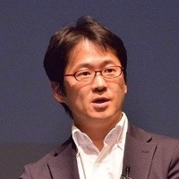

日本の一般事業会社はデジタル技術により事業変革を行う、デジタルトランスフォーメーション（DX）を積極的に推進しています。今回はその中でも日本を代表するDX推進企業として有名な3社にお越しいただき、DXとプロダクトマネジメントについてお話頂きます。内製化の有無がどのようにDXでのプロダクトマネジメントに関係するか、変革に必要なプロダクトマネージャーの役割とはなど、DXと呼んでいなかったとしても、多くの組織や事業で必要となるであろうトピックを日本をリードするDX企業の方々と考えてみたいと思います。
登壇者プロフィール
日本IBM在籍時、OSの開発から携帯電話、SEGA Dreamcast、カラオケ端末、デジカメ等の組込みソフトウェア開発に従事。お客様プロダクトのアーキテクチャー設計支援等を経て、2019年より現職。グループ全体でDXを進める三菱ケミカルホールディングスにて、Chief Digital ArchitectとしてDX推進の基盤となるアーキテクチャーの構築を担当する。
登壇者プロフィール
1994年慶応大学SFC卒、日本経済新聞社入社。イベント企画、オンラインの記者・編集者などを経て、2010年に創刊し有料会員55万人を抱える日経電子版の企画・開発（プロダクトマネージャー）を担当しアプリなどの内製化を推進。2016年に同社シリコンバレー支局赴任。事業開発担当としてメディアの将来につながる技術やサービス、パートナー企業との連携を模索。2019年から電子版のCPO（Chief Product Officer）を支えるCPO室を設立し組織改革や戦略立案を担う。登壇者プロフィール
大学を卒業後、日本IBM、伊藤忠商事、香港のIT事業会社 社長、SAPジャパン、中国方正集団、ビットアイル・エクイニクスなど国内外のIT企業の役員を歴任し、2016年8月デンソーに入社。コネクティッドカー時代のIoT推進を担当し、2017年4月にはデジタルイノベーション室を新設、同室長に就任。2018年4月よりMaaS開発部長。